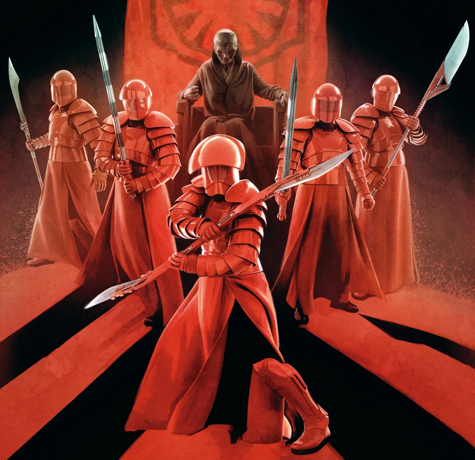
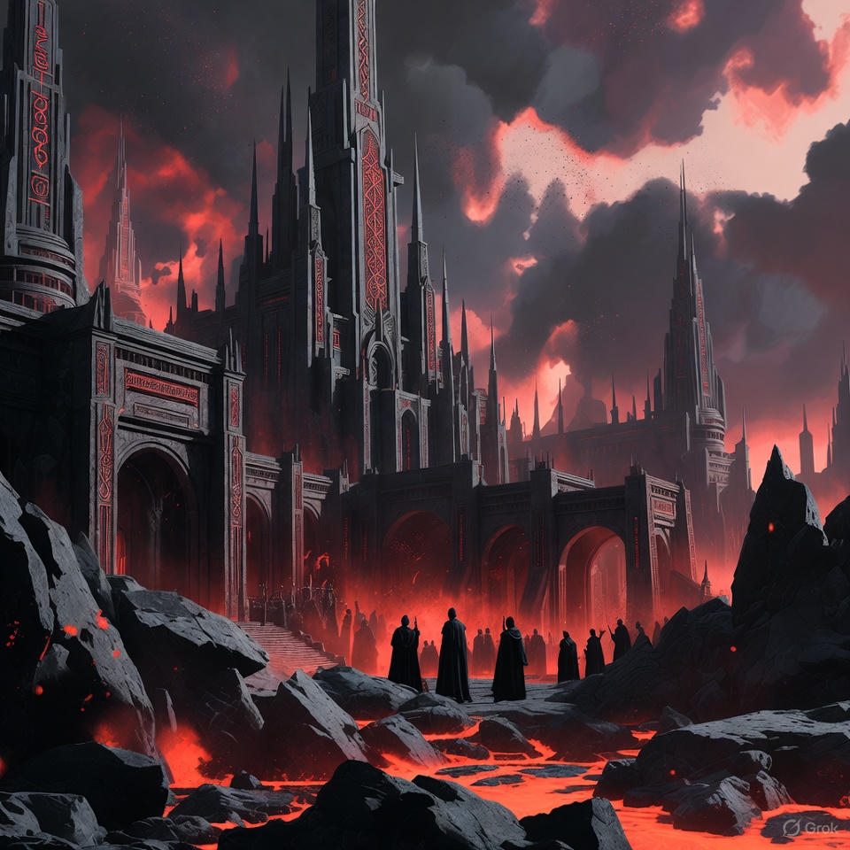

EMBRACE
YOUR DESTINY
You were never meant to serve, you were born to rule. Join the Sith Order and unlock your true potential. The galaxy is in chaos. Only the strong can shape its future.Are you ready to command the Force, or be crushed by it?
Why Join the Sith?
The Jedi offer submission. The Sith offer strength. As a Sith, you will:
🜲
Power
Command the Force through passion and willpower
↗
Promotions
Rise in rank by merit, not bloodline
✮
Enlightenment
Gain access to ancient knowledge long hidden by weak-minded fools
⚔
Fate
Forge destiny not follow it
✴
Independence
Know true freedom, unshackled by the lies of peace and balance
Not everyone is worthy of the Dark Side. But perhaps… you are. Take the test to see how well your rage aligns with the Sith Code.
The Force rewards those who take it.

🟥 Become a Royal Redguard 🟥
Forged in darkness and bound by loyalty, the Royal Redguard stands as the final shield between the Sith Lord and death itself. Clad in crimson armor and armed with unyielding will, you are more than a soldier you are the embodiment of the Dark Lord’s wrath. Your life is sworn to vigilance. You do not question. You do not falter. When the Sith Lord commands, you move as shadow and strike as fire. Through discipline, fear, and power, you will become the perfect guardian of the Dark Side’s will. Only the strong may wear red. Only the loyal may stand beside greatness. Do you have the resolve to defend the Dark Lord or will you kneel before those who do?
SITH MENTORSHIP
Sith Mentorship is an intense one-on-one path where your potential is awakened through discipline, ambition, and power. You will learn to harness your emotions, sharpen your will, and rise above limitations.
- Personal guidance to unlock your raw power
- Mastery through challenge, conflict, and resilience
- Focused training shaped around your ambition
DARK SIDE CIRCLES
Dark Side Circles bring acolytes together to share insights, test their limits, and grow stronger as a collective. A space of intensity, clarity, and transformation.

- Strength drawn from others who walk the same path
- A disciplined community that demands growth
- Shared knowledge, trials, and breakthroughs
SITH COMBAT TRAINING
Push your limits with disciplined combat sessions designed to refine precision, power, and dominance. Perfect for those who seek mastery through action.
- Expert-led combat drills and technique refinement
- Accountability through rigorous training
- A powerful environment to accelerate your growth